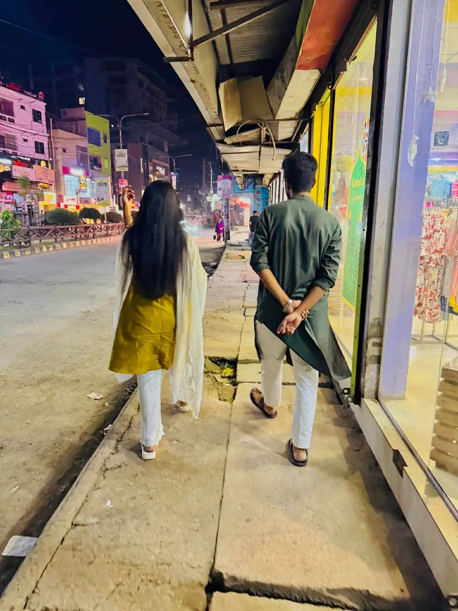
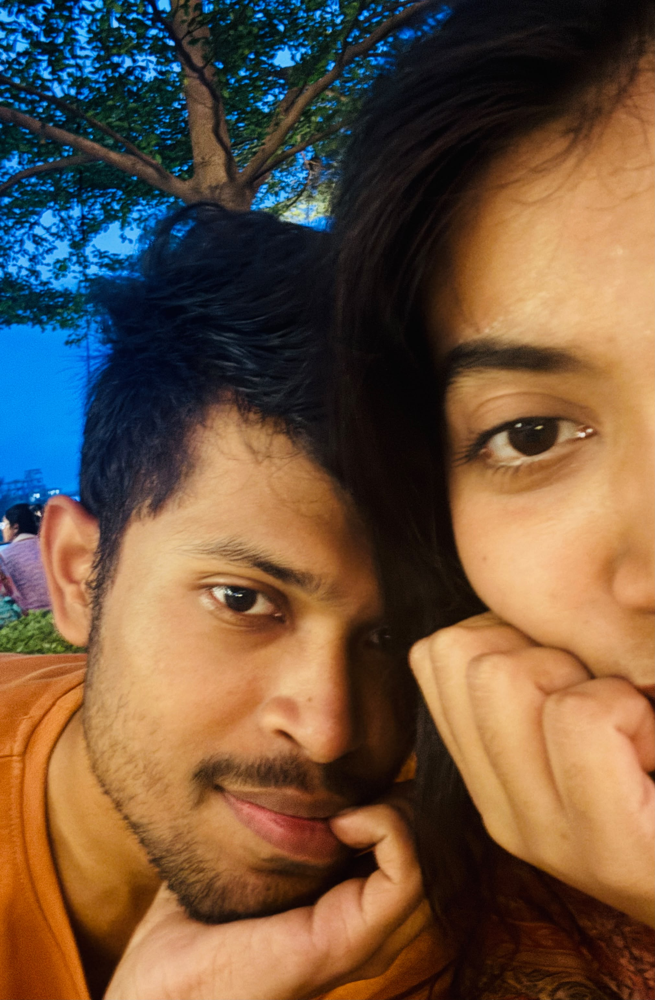

A few pieces of a story I never want to forget
Our Journey
Three little frames. A thousand feelings. And a story that still has so many beautiful pages left to write. 💗

♡Where our story started
This was one of those little moments that quietly became part of a much bigger story. Looking back, I love knowing that this was only the beginning.
 ♡
♡
The moments I keep close
The very first time my hand touched yours, it felt like the entire world went quiet for one second. It was small, but somehow it felt completely right.

♡More memories are waiting
Every picture with you feels like one page of a much bigger album. I want the quiet days, the silly days, the adventures and all the blurry little moments in between — with you.
And now, one last birthday wish...
Happy Birthday Again
My Love 💗
I love u snitch ♡
Start Our Story Again↻